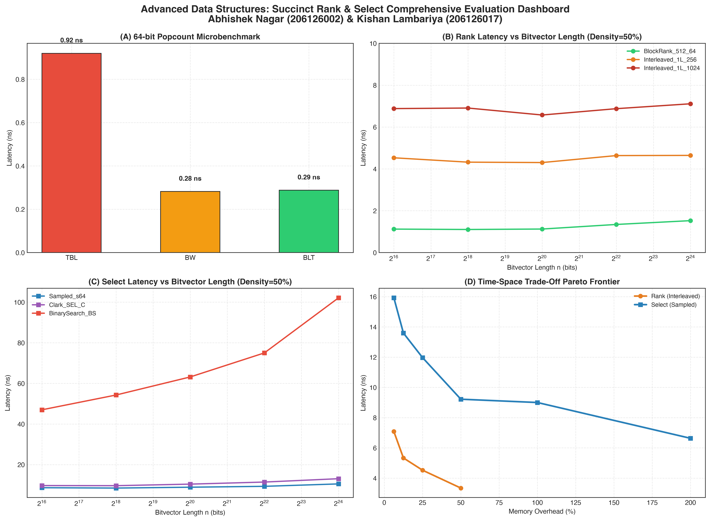
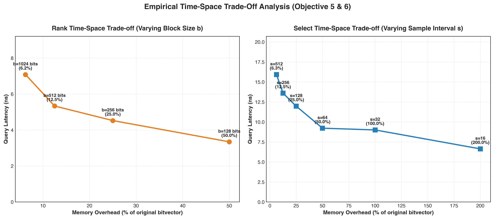

Finds the number of 1s in the prefix B[0 ... i−1].
Finds the 0-based bit position of the k-th 1 (1-based index).
| Data Structure | Query Time | Throughput | Space Overhead | Algorithmic Mechanism |
|---|---|---|---|---|
| Naive Bit-by-Bit Scan | 5,822.16 ns | 0.17 Mops | 0.00 % | O(n) linear loop over individual bits |
| BlockRank (512, 64) | 1.08 ns | 929.4 Mops | 38.28 % | Two-level Jacobson/Vigna (Rs: 64b, Rb: 16b) |
| Interleaved RANK-1L (256) | 4.53 ns | 220.7 Mops | 25.00 % | Gog & Petri (2014) 1-Cache line hit architecture |
| Sampled Select (s = 64) | 11.85 ns | 84.4 Mops | 25.39 % | Stored 1-positions every s-th 1 + local popcount |
| Clark Select (SEL-C) | 16.81 ns | 59.5 Mops | 5.54 % | 2-Level multi-inventory with relative offsets |
| Binary Search Select (SEL-BS) | 44.58 ns | 22.4 Mops | 0.00 % | Zero extra space (binary search over Rank Rs) |

